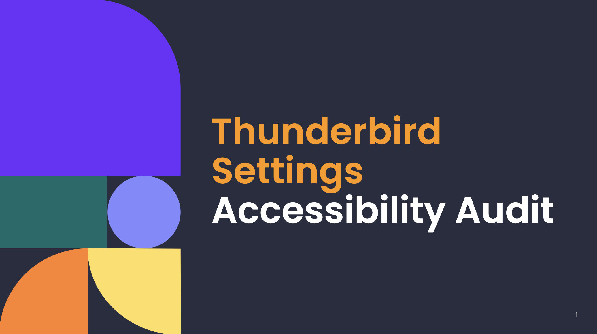

Skillset
Selected Projects

Accessibility Audit: Thunderbird Settings & Configuration
December 2025 - May 2026
An accessibility audit documenting color contrast, keyboard navigation, focus management, and screen reader compatibility across Thunderbird's Settings interface. Findings identify barriers affecting users with low vision, motor, and cognitive disabilities, with remediation guidance addressing UI clarity, keyboard operability, and assistive technology compatibility.

Accessibility Study: Thunderbird Global Search Bar
October 2025 - January 2026
An accessibility study evaluating how assistive technology users interact with Thunderbird's Global Search and email workflows, benchmarked against Gmail and Outlook. Documentation covers focus management, keyboard navigation, and screen reader compatibility (VoiceOver), measured against WCAG and POUR standards — with particular focus on keyboard-only and screen reader users. Voice control analysis is currently underway.